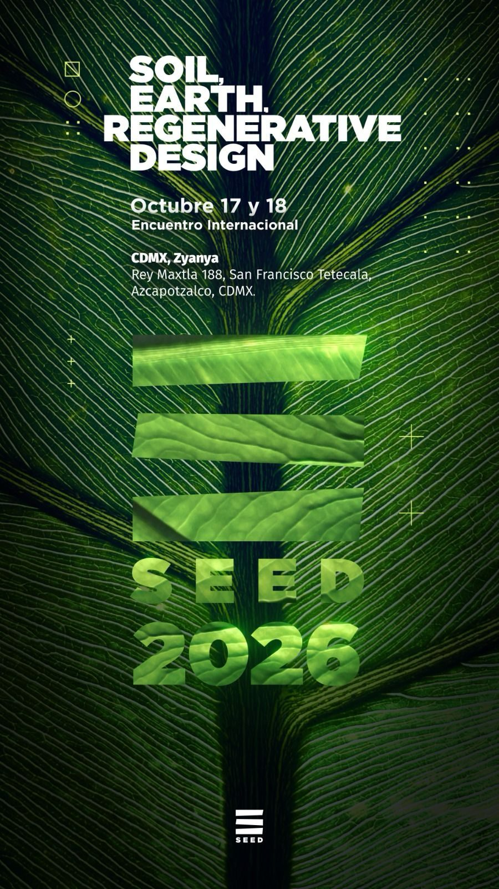

Dos días de inmersión
Una agenda diseñada para profundizar en suelo fértil, biomateriales y proyectos regenerativos desde una perspectiva práctica e interdisciplinaria.
Encuentro SEED 2026 · Encuentro internacional
SEED 2026 reúne durante dos días a especialistas, proyectos y organizaciones alrededor del suelo fértil, los biomateriales y el diseño regenerativo. Una experiencia creada para generar conversaciones, alianzas y oportunidades reales.
Valor estimado de una experiencia de esta escala: más de $7,000 MXN por persona.
Precio Early Bird con apoyo de patrocinadores: $4,200 MXN por persona.
Cargando cuenta regresiva…

Etapa Early Bird · 20 de julio – 31 de agosto
Gracias al respaldo de patrocinadores y aliados que se están sumando a SEED 2026, la etapa Early Bird permite acceder por $4,200 MXN por persona: un acceso patrocinado a una experiencia de alto valor, no solo un descuento.
Precio Early Bird válido del 20 de julio al 31 de agosto de 2026. Después de esa fecha, el boleto cambia a [Precio regular posterior pendiente].
Cargando cuenta regresiva…
[Liga Mercado Pago pendiente] — el pago se procesará de forma segura con Mercado Pago en cuanto se active.
Marcas y organizaciones aliadas: [Patrocinadores por confirmar]
Dos días de conversación enfocada entre especialistas de tres ejes temáticos afines.
Un espacio para construir redes de conocimiento entre quienes ya trabajan en soluciones regenerativas.
Tecnología, biomateriales y diseño aplicados a retos ecológicos concretos.
Ideas y proyectos pensados para germinar más allá de las fechas del encuentro.
El encuentro
SEED es un encuentro que reúne especialistas en tres ejes temáticos: suelo fértil, biomateriales y proyectos regenerativos, con un enfoque de tecnología e innovación.
Aborda temáticas relevantes para el diseño de una vida consciente, responsable y resiliente en el planeta. Busca reunir soluciones a retos ecológicos, donde los recursos naturales son la fuente de inspiración.
SEED es la semilla de potencial y creatividad: una fuente de inspiración que ayuda a germinar ideas y proyectos. Un espacio donde potenciar las colaboraciones y construir redes de conocimiento y acción.
Valor de la experiencia
El valor de SEED 2026 no está únicamente en asistir a conferencias. Está en formar parte de una conversación especializada, conectar con personas que ya están construyendo soluciones y acceder a una agenda diseñada para abrir posibilidades de colaboración.
Una agenda diseñada para profundizar en suelo fértil, biomateriales y proyectos regenerativos desde una perspectiva práctica e interdisciplinaria.
Conecta con personas, organizaciones y proyectos vinculados al diseño regenerativo, sostenibilidad e innovación aplicada.
Más que ponencias, SEED busca detonar colaboraciones, alianzas y proyectos concretos.
El apoyo de patrocinadores permite abrir una etapa Early Bird de $4,200 MXN, por debajo del valor estimado de una experiencia de esta escala.
Beneficios de asistir
Conecta con personas que comparten una visión activa sobre regeneración, diseño, sostenibilidad, biomateriales y proyectos de impacto.
Accede a conversaciones que pueden ayudarte a repensar proyectos, modelos de colaboración y oportunidades concretas.
SEED está diseñado para que las conversaciones no terminen en el evento, sino que puedan convertirse en proyectos, colaboraciones o iniciativas futuras.
Forma parte de una red que está creciendo alrededor de soluciones regenerativas y nuevas formas de crear valor.
No es un evento masivo sin dirección. Es un encuentro pensado para reunir perfiles, temas y conversaciones con intención.
Público objetivo
Networking con resultados
En la edición 2024, el encuentro abrió conversaciones que derivaron en alianzas, colaboraciones y proyectos con continuidad. Esta sección será actualizada con casos documentados conforme se autorice su publicación. [Casos 2024 por documentar]
[Nombre de alianza o proyecto concretado]
[Personas u organizaciones involucradas]
[Resultado concreto después del encuentro]
[Nombre de colaboración]
[Área o industria relacionada]
[Impacto o siguiente paso generado]
[Conversación iniciada en SEED 2024]
[Seguimiento posterior]
[Resultado verificable]
Los casos serán publicados conforme se confirme autorización de las personas y organizaciones involucradas.
Agenda
Agenda preliminar y editable — sustituye horarios y actividades conforme se confirmen.
Participantes
[Participantes por anunciar] — la lista para esta edición está en construcción. Sustituye cada tarjeta conforme se confirmen los nombres.
[Cargo / organización]
[Cargo / organización]
[Cargo / organización]
[Cargo / organización]
Ejes temáticos confirmados para esta edición:
Sede
Rey Maxtla 188, San Francisco Tetecala, Azcapotzalco, CDMX.
Modalidad: [Sede / detalles logísticos por completar]
Ver en Google MapsPreguntas frecuentes
La etapa Early Bird inicia el 20 de julio de 2026.
La etapa Early Bird termina el 31 de agosto de 2026.
El costo Early Bird es de $4,200 MXN por persona, frente a un valor estimado de más de $7,000 MXN para una experiencia de esta escala.
[Precio regular posterior pendiente] — se confirmará antes del cierre de la etapa Early Bird.
La compra se habilitará mediante Mercado Pago para facilitar el proceso. El enlace definitivo será integrado antes del inicio de la etapa Early Bird.
[Información fiscal pendiente de confirmar]
[Beneficios incluidos pendientes de confirmar]
El cupo estará sujeto al aforo de la sede y a la capacidad operativa del encuentro.
En Zyanya, Rey Maxtla 188, San Francisco Tetecala, Azcapotzalco, Ciudad de México.
Escríbenos a seed.contactomx@gmail.com o por WhatsApp al +52 56 1133 9050.
SEED 2026 · Early Bird próximamente
Durante la etapa Early Bird, el boleto tendrá un costo de $4,200 MXN por persona gracias al apoyo de patrocinadores — frente a un valor estimado superior a $7,000 MXN. El enlace de compra se habilitará antes del inicio de la etapa (20 de julio de 2026).
[Liga Mercado Pago pendiente] — enlace de compra en proceso de configuración. Correo y WhatsApp corresponden al contacto institucional registrado por SEED; confirma que sigan vigentes para esta edición antes de publicar.